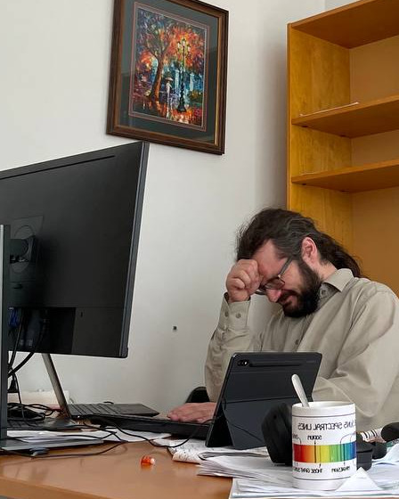

Hi, I’m Vlad!
Welcome to my humble webpage. Don't be afraid of the hedgehog but try not to scare him either. I’m an astrophysicist, currently living in Prague - more about me. By the way... …or just .

Welcome to my humble webpage. Don't be afraid of the hedgehog but try not to scare him either. I’m an astrophysicist, currently living in Prague - more about me. By the way... …or just .
